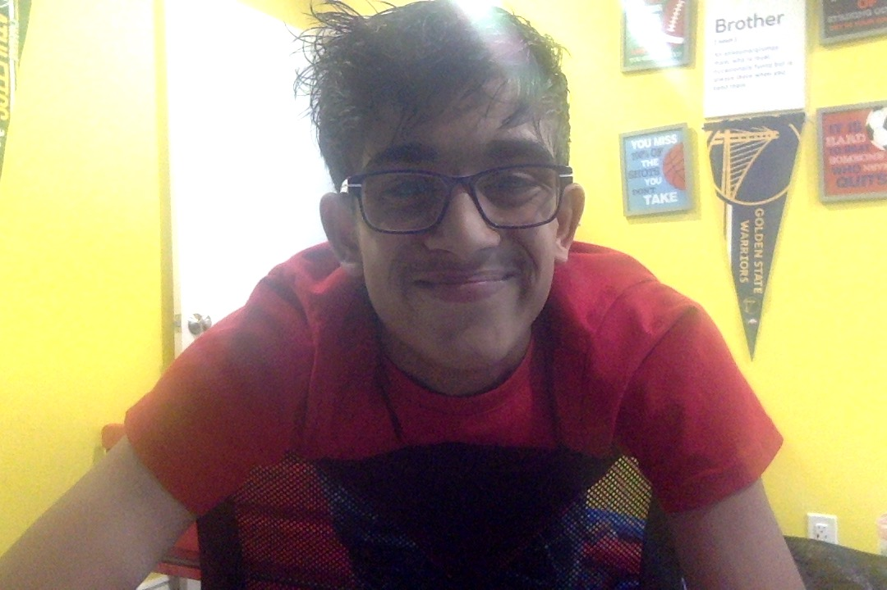

Smayan's Resume

Summary:
I'm the founder of Sports Square, and am currently the lead writer, CEO, and head of operations
for Sports Square. I also work for LWOSports as a Dodgers beat writer, and have used my coding
skills to help many local websites in my community. I'm dedicated to devlopment, and I have
experience in Python and HTML, plus experience in the journalism industry, meaning that I
would be the perfect hire! I'm passionate about coding, sports, and writing!
Education
- Majestic Way Elementary School (San Jose, California)
- Thomas S. Hart Middle School (Pleasanton, California)
- In the middle of Foothill High School (Pleasanton, California)
Work Experience
- Founder, Lead Writer, Head of Operations of Sports Square 2022-Present
- Beat Writer for the Los Angeles Dodgers on LWOSports.
- Worked with local websites in my community to help them with their coding.
Skills
- Python
- HTML
- Writing
- Sports
- Journalism
- Operations
- Leadership
- Teamwork
- Communication